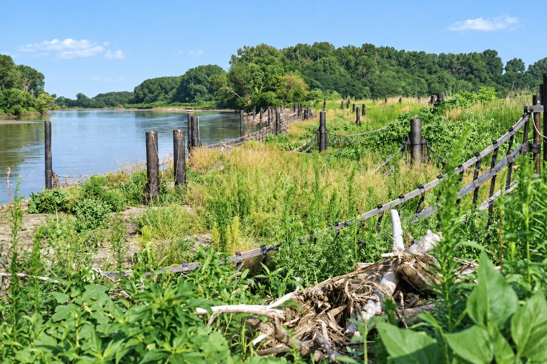
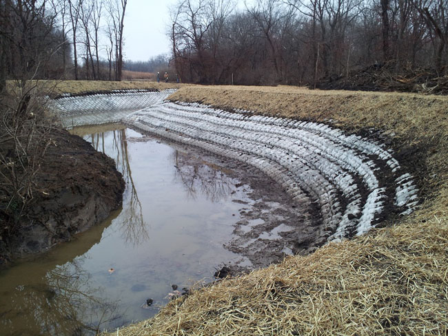
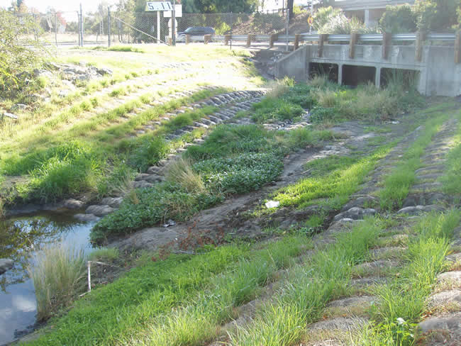
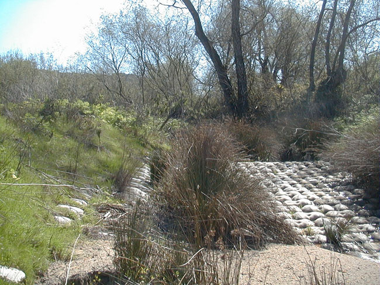
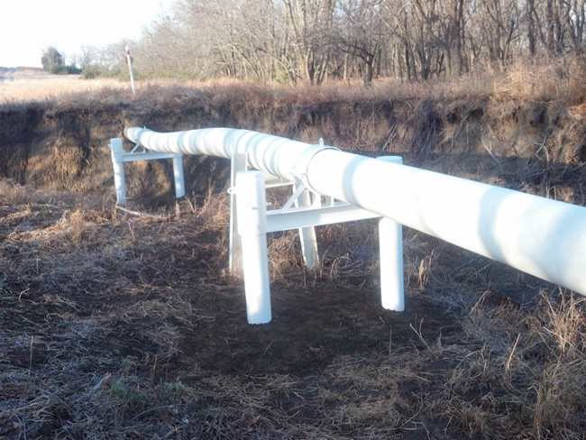

Understand the Conditions
Document the field conditions, affected assets, site geometry and signs of change.
The erosion visible at the asset is part of the problem, but the forces driving it may begin elsewhere. Er-Con evaluates both the damage and its root cause before recommending the right system or combination of systems.
Document the field conditions, affected assets, site geometry and signs of change.
Identify what is driving the problem, then compare the systems best suited to the site.
Root cause. Site fit. Constructability. Permitting. Asset life.
Reviewed with the customer before execution.Develop the approved solution and prepare the project-specific system for execution.
Complete the work in the field and confirm the finished condition.
Core erosion-control solutions
Er-Con selects the right system and engineers its application around the forces acting on the site and the asset that needs protection.

River Training
A patented system that redirects high-velocity and turbulent flow away from threatened banks while encouraging natural accretion and habitat recovery.
View Palisade →
Bank Stabilization
A connected concrete protection system designed for steep grades, head cuts and conditions where rigid structures may be vulnerable to movement or separation.
View FCR →
Articulating Grout Mat
Custom-fabricated, cable-reinforced concrete mattresses that conform to the site and resist bed degradation, bank erosion and erosive forces.
View Ercoform →
Revegetated Protection
An open-cell articulating mat that supports natural vegetation while providing protection against periodic high-flow events.
View Eco-Flex →
Integrated Coverage
A combined approach using Ercoform for high-strength bed protection and Eco-Flex along banks where revegetation is appropriate.
View System 21 →
Exposed Infrastructure
Standard and high-strength support systems for exposed or suspended pipelines where conventional cover is impractical or immediate stabilization is needed.
View Pipeline Supports →Additional capabilities
For moderate- and low-velocity flow conditions where reinforced vegetation can provide effective protection.
High-tensile geogrid systems used within engineered fill to reconstruct and reinforce unstable slopes.
A problem worth understanding?
Tell us what is happening at the site, what concerns you and which assets need protection. We’ll help determine the right path forward.